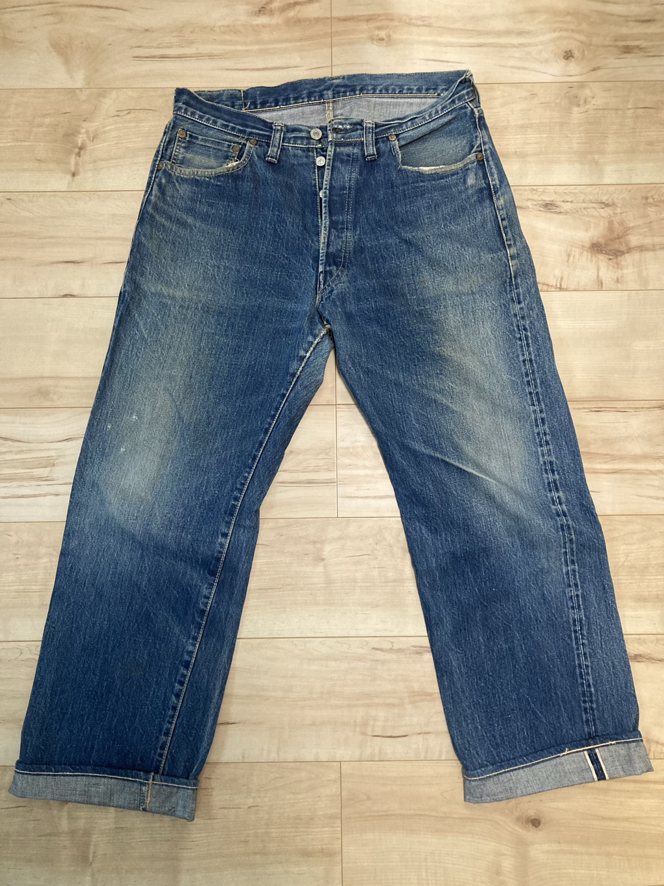
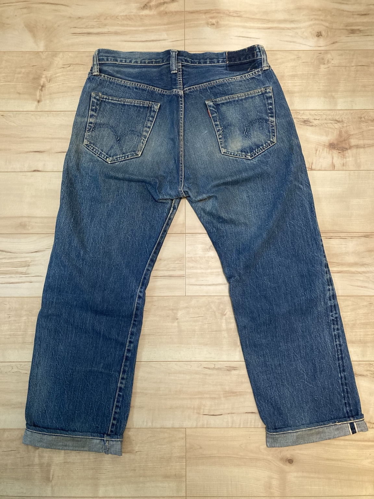

Front

DENIM FADE LAB / SILVER STONE
時間を経て完成した一本を、実物写真で記録します。
このページでは、所有しているSilver Stoneのデニムを、完成した色落ちの実物資料として記録します。現在進行形で育てているデニムとは異なり、すでに長い時間を経た一本を「完成形の一例」として観察できるようにしています。
全体に残るインディゴの濃淡、腿まわりの自然なフェード、膝や裾に現れたアタリ、バックポケット周辺の経年変化など、前面・背面の写真から一本全体の表情を確認できます。


写真をクリックすると拡大表示できます。
DENIM FADE LABでは、TCB 1890のような「現在進行形の色落ち記録」と、Levi's 501E・66前期・初期EVISなどの「完成した実物資料」を並べています。このSilver Stoneも、これからデニムを育てる際に完成した色落ちの一例として比較できるよう、Vintage Archiveに追加します。